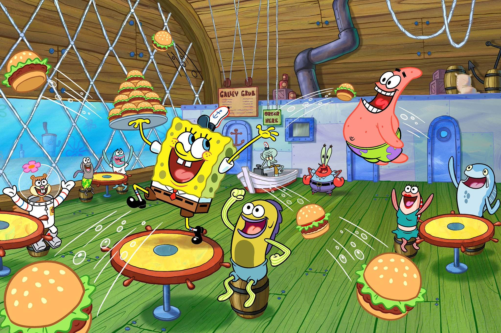

Bob Esponja es una serie de televisión de dibujos animados estadounidense creada por el animador, caricaturista y biólogo marino Stephen Hillenburg (1961-2018) para la cadena Nickelodeon, estrenada el 1 de mayo de 1999. Es producida por su compañía, United Plankton Pictures. La serie narra las aventuras y los esfuerzos del personaje del título y sus diversos amigos en la ficticia ciudad submarina de Fondo de Bikini. Es la quinta serie animada estadounidense de más larga duración, su popularidad la ha convertido en una franquicia, así como la serie con el rating más alto jamás emitida en Nickelodeon.